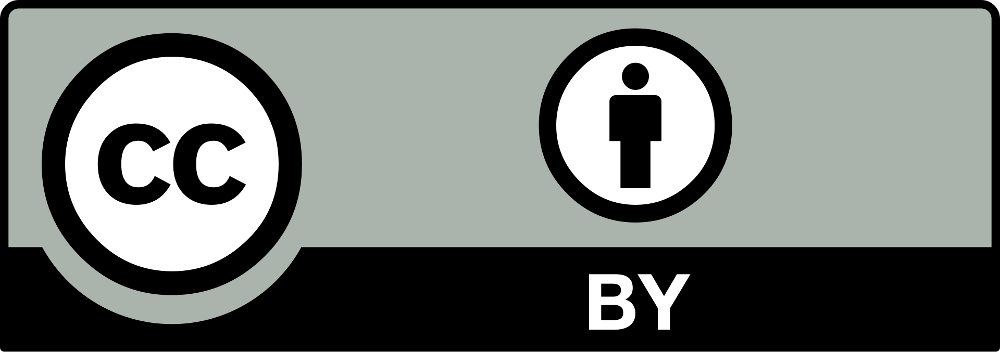
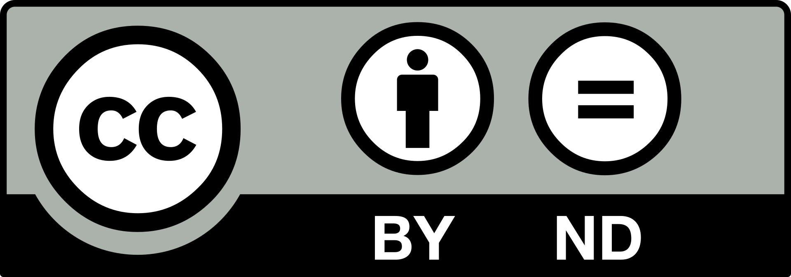
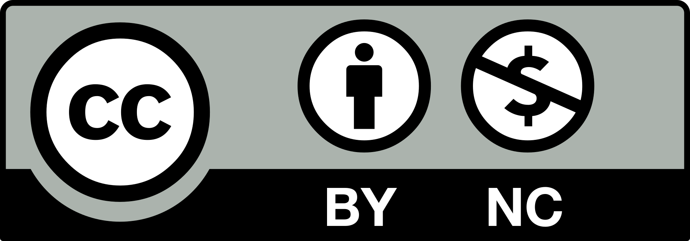
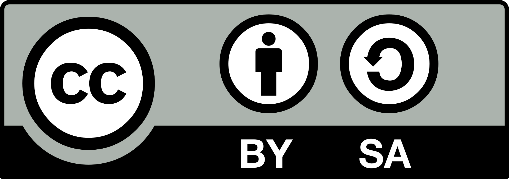

Copyright, Creative Commons & Fair Use

Copyright
Copyright is a form of intellectual property that gives the creator of a particular work the rights to distribute, display, adapt or perform it.
Source: Wikipedia
Creative Commons
Creative Commons licenses allow for copyrighted works to be freely distributed under certain guidelines. Some examples of CC licences include:
- CC BY: Allows for adaptations and uses of the work, so long as the creator is credited.
- CC BY-ND: Same as CC BY but, when adapted and used, the work must be altered in a way so that it is not identical to the original.
- CC BY-NC: Same as CC BY, but the adapted/used work must not be used for commercial purposes, e.g., merchandise.
- CC BY-SA: Same as CC BY, but the adapted work needs to be put under a licence no more strict than the licence held by the original work.




Source: Wikipedia
Fair Use
Fair use is a set of guidelines that, if followed, allow the use of a copyrighted work without the creator's knowledge. Fair Use allows copyrighted works to be used for news reporting, parody, commentary, or teaching.
Source: Copyright Alliance
Privacy & Web Privacy Policy

Privacy Policy
A Privacy Policy is a statement that discloses how an organisation collects, manages, uses and discloses customers' personal data.
New Zealand Privacy Act 2020
Here are the 13 principles of the New Zealand Privacy Act 2020:
- Data must only be collected if it is required for activities related to the organisation collecting it.
- Personal data must be collected directly from the person the data relates to. One exception would be if the data is collected from an openly available source.
- The purpose for collecting the data and who will be receiving it should be made clear to the person sending the data. If you collected it from another source, that source should be made clear to them as well.
- Data must be collected in a lawful, fair and reasonable manner.
- Safeguards must be put into place by the organisation to ensure data is not misused, disclosed or lost.
- If a person requests access to their own personal information, they should be able to access it.
- A person has a right to correct any of their personal information if they feel it is inaccurate or incorrect.
- Before using or disclosing any data, an organisation must check that it is accurate, complete, relevant, up-to-date and not misleading.
- Personal information must not be kept by an organisation longer than the intended purpose requires.
- Personal information should only be used for the purpose it was initially collected for, unless those other purposes directly relate to the original purpose.
- Personal information must only be disclosed for the purpose it was initially collected for, unless those other purposes directly relate to the original purpose.
- Data must only be disclosed to organisations outside of New Zealand if those organisations comply with privacy rules akin to those in New Zealand.
- Numbers as identifiers must only be applied to customers if it is required for the purpose stated.
Privacy Policy Example
All information submitted to this site will be stored for feedback purposes. This information will be deleted once these purposes have been fulfilled. It will not be disclosed to any other organisation.
Source: Privacy Commissioner New Zealand
How to improve your website SEO?

Search Engine Optimisation (SEO)
Here are five ways that you can improve the Search Engine Optimisation (SEO) on your website:
- Ensure your website pages are properly structured. This can involve naming different sections of your website, making text and content easily readable, ensuring content is unique and up-to-date & linking to relevant pages and resources.
- Ensure keywords are frequently utilised throughout your webpage, including the title and URL. Aim to include as many as you can, especially in the hero section of your Home page. Formatting, such as bolded and italic text, can further improve SEO as well.
- Utilise metadata by adding concise descriptions and additional keywords that will show up when the site appears on search engines.
- Make sure your site is optimised for both desktop and mobile devices. Most websites are viewed on mobile devices, so you should develop your site with a mobile-first approach to increase engagement.
- Ensure your site is accessible and easy to screen-read. These sites are more likely to be recommended in search engines.
Source: Michigan Tech University
Factors you should know when choosing a right Web Hosting Provider

Web Hosting
When choosing a web hosting provider, here are five things you should consider:
- If your website requires high-quality, fast web performance, you should consider using a host that utilises Virtual Private Servers (VPS) rather than a shared server, although the option will be more expensive in the long run.
- Ensure that the service you are choosing has security features such as a Secure Sockets Layer (SSL) to protect any personal information that may be entered into the site.
- Check the provider's terms of service to make sure you don't agree to any undisclosed fees, policies or data limitations. These terms can determine what experience you may have with the provider, which can drastically affect your website's performance.
- Ensure that the provider has a good reputation by reading reviews related to them. Pay attention to any issues addressed by these reviews and determine whether they could be a problem for you when implementing your website.
- Check the bandwidth used by the provider, ensuring they don't rely on a certain bandwidth or internet speed that could affect performance and/or require you to pay extra for higher bandwidth.
Source: Business.com
Web Performance and Maintenance

Web Performance
Loading times will significantly affect the number of users your site attracts. Here are five ways you can reduce the load time for your website:
- Aim to compress images when possible, as images with larger sizes will take longer to load. Generally, images that will appear smaller on your site than their actual size should be compressed to fit that smaller size.
- Ensure your CSS and JavaScript files are loaded asynchronously. This will allow multiple files to load at the same time, rather than one after another.
- Only use plugins on your site if they are strictly necessary, as using a large number of them can affect performance speed.
- Cache your web pages by storing copies of the site's files via the web host you are using. This will lower the amount of resources the server needs to load the site.
- Choose a host that offers a Content Delivery Network (CDN); this is a network of servers that works alongside your host server. A CDN can improve the performance of your site by hosting copies of your site's files on different servers.
Source: HubSpot
Web Maintenance
When it comes to maintaining your website, here are five important tasks that need to be carried out:
- Security checks and patches need to be performed. It is extremely important to ensure that the security software(s) being used to store information on your site are regularly updated to ensure web vulnerabilities are removed.
- Content displayed on your website needs to be kept up-to-date; any outdated content should be replaced as soon as possible.
- Ensure any backups you have for your site are kept updated so that, if something fails, you have a recent version of the site to backup from. This is very important in the case of data recovery, as it helps to prevent corruption of your site.
- Monitoring the performance of your site can help to reveal any issues associated with the speed, access and responsiveness of your site. If you're noticing any significant drops in performance, you may need to use several techniques (see "Web Performance") to increase it.
- The uptime of your site also needs to be monitored. This will ensure that your site is up whenever people need to use it most. In the case that your site does go down, you will need to locate the root of the problem to get it back up again.
Source: MailChimp
Web Security

Web Security
Here are five common cybersecurity threats, and how you can protect yourself against them:
- SQL injections are often used by cybercriminals to allow themselves to edit, add or delete data from a website's database. Considering most databases run on SQL (Structured Query Language), they are vulnerable to these injections. One way to prevent SQL injections is to use prepared statements, which separates the structure of the SQL database from the actual SQL data.
- Cross-site scripting (XSS) is a code injection that puts the users of the targeted site at risk. During an XSS attack, the perpitrator is able to access the cookie information of the users visiting the site via the script that they inject into the site; this can allow them to access a user's session and steal their information. This can be prevented by setting encoding for when the user's data is inputted and outputted, which makes it harder to access.
- Distributed Denial of Service (DDoS) attacks aim to overload a site's server with HTTP protocols, in an attempt to tank that site's performance for its users. DDoS attacks can have significant effects on the reputation of a website or its associated business. One technique for preventing DDoS attacks is a Web Application Firewall (WAF), which filters, checks and blocks malicious HTTP protocols.
- DNS Spoofing is when the Domain Name Server (DNS) of a website is redirected by a cybercriminal to a malicious website, most commonly one that disguises itself like the website it was originally aimed towards. To prevent this, use a trusted DNS, one that is updated on a regular basis, as these are much less likely to be affected by DNS Spoofing.
- Command Injections are performed via a command shell and are used to perform malicious commands towards a web server; these commands can be used to locally collect, alter or delete data from these servers. This can be prevented by ensuring that all system commands are carefully and securely executed, so that they cannot be exploited by potential hackers.
Source: Imperva